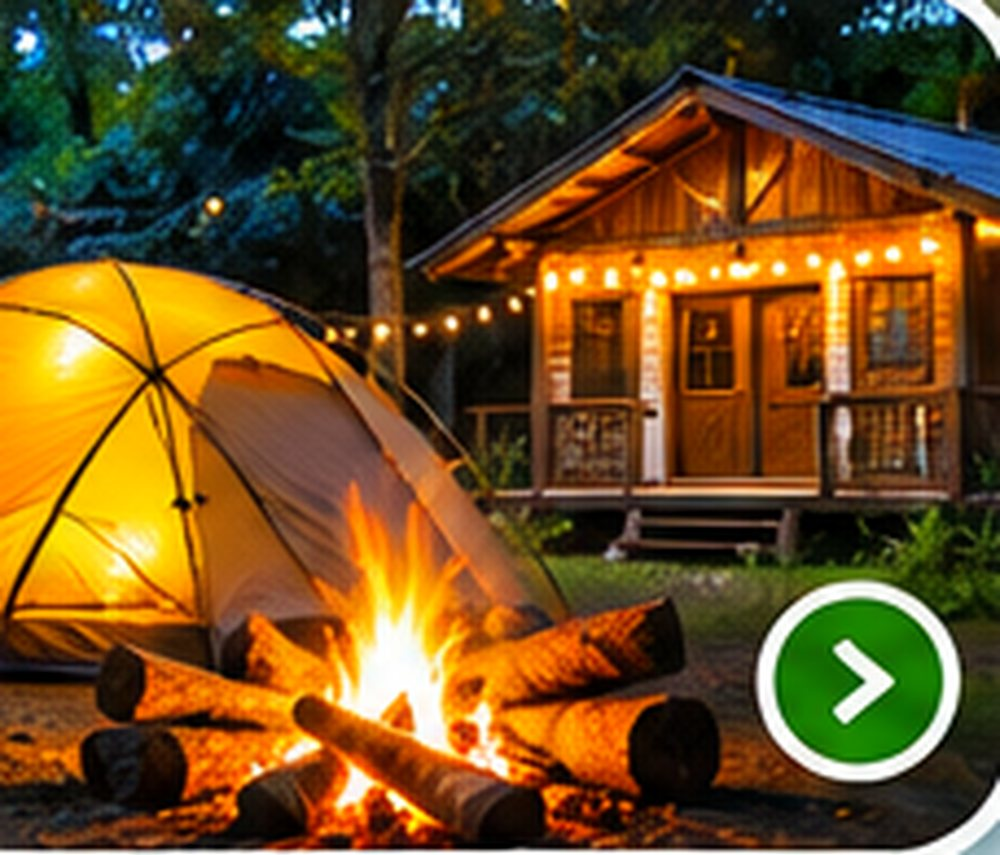

Camping
Espacios para acampar y conectar con la naturaleza.
Descansa entre árboles, comparte experiencias y vive Pance a otro ritmo.
← Volver al inicioInformación para conocer el territorio con respeto y apoyar a sus comunidades.

Espacios para acampar y conectar con la naturaleza.
Alojamiento de experiencia en un entorno natural.
Alternativas para descansar en la zona rural.
Consulta las normas; no enciendas fuego en zonas no habilitadas.
Espacio para añadir servicios, disponibilidad y contacto verificados.
Directorio pendiente de confirmar nombres y reservas.